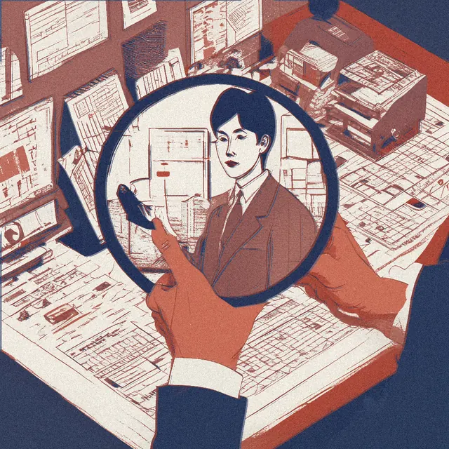
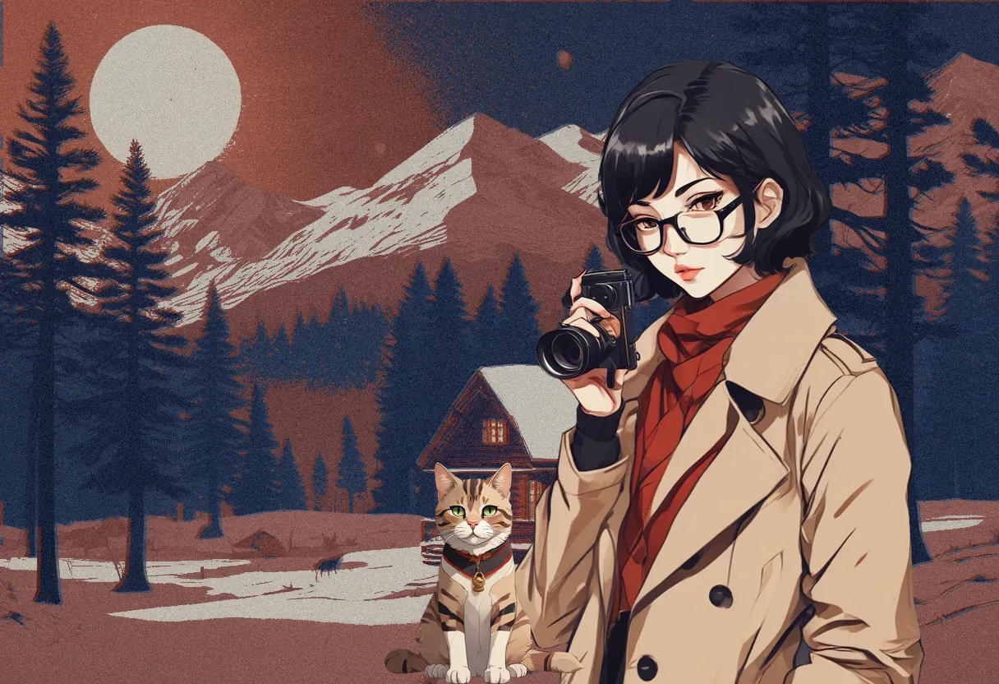
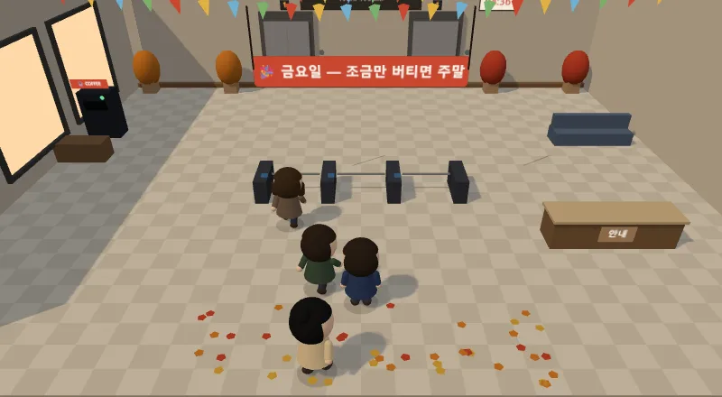
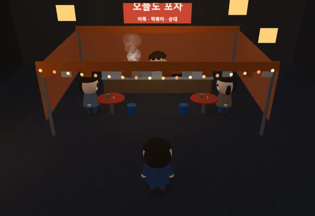

오늘의 놀이
일곱 개 · 아무거나 먼저
2분 · 질문 9개나는 어떤 일 유형?
회사·집에서 흔히 겪는 장면 아홉 개. 제일 나 같은 걸 고르면 됩니다.
시작
10분 추리 게임폭설에 갇힌 산장.공개 전 그림이 사라졌다.
한겨울 사진관 사건 수첩
사진관 탐정과 고양이 조수가 되어 단서를 모으고, 네 사람을 심문하고, 범인을 지목하세요. 지금 제5화까지 — 진행은 저절로 저장돼요.
사건 시작영하 15도, 공중에 한 사람.
추리마을
눈 내리는 3D 마을을 귀여운 탐정으로 걸어 다니며 단서를 줍고, 주민과 이야기하고, 범인을 찍으세요. 지금 사건 5개 — 「멈춘 리프트」·「가로등이 꺼지는 밤」·「잔치 국솥」·「창고 방화」·「눈길 뺑소니」.
마을로 들어가기
1분 · 매일 · 3D 로비출근 도장
「주식회사 오늘도」 로비에서 사원증을 찍고, 커피 한 잔, 기지개 한 번. 퇴근 시각에 따라 칼퇴·야근 카드가 나오고, 이번 달 기록은 한 장으로 저장돼요. 가입 없음 — 기록은 이 기기에만.
출근하기
1~2분 · 계속 늘어남미니게임
잠깐 들렀다 가는 작은 3D 장소들 — 퇴근길 포장마차 · 붕어빵 노점 · 옥상 별 캠핑. 단추 몇 개뿐이고, 장소는 하나씩 늘어나요.
골라 들어가기 30초 · 매일 바뀜
30초 · 매일 바뀜오늘의 운세
일운·금전운·대인운·퇴근운에 행운의 숫자, 점심 메뉴까지. 내일 오면 또 바뀌어요.
오늘 운세 보기 1분 · 한 장 또는 세 장
1분 · 한 장 또는 세 장타로
메이저 카드 22장. 고민 하나에 한 장을 뽑거나, 과거·현재·미래 세 장을 펼쳐 보세요.
카드 뽑기나의 회의 유형
정적을 못 참는 쪽인가요, 회의록을 혼자 다 쓰는 쪽인가요. 회의실 장면 아홉 개.
시작점심 메뉴로 보는 일 스타일
늘 먹던 거, 신메뉴, 제일 빨리 나오는 거. 메뉴 고르는 버릇이 일하는 버릇이에요.
시작